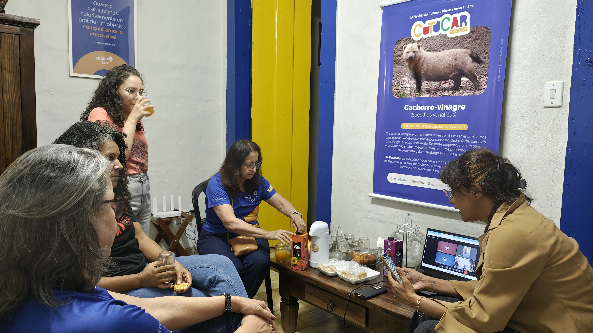

Eventos e curadoria
para empresas, instituições e poder público
Concebemos seminários, jornadas, convenções e encontros, da escolha do tema e dos convidados à realização.
Seminário de Economia da Cultura de Paracatu
O Seminário de Economia da Cultura de Paracatu, realizado pela Guiastur, tem curadoria de Rubem dos Reis, fundador da Balaio, da definição do tema à escolha dos convidados. Em 2026, chegou à terceira edição com o tema Olhares para o Futuro.
veja como foi o seminário de Paracatu →
Foto: plateia acompanha o III Seminário de Economia da Cultura de Paracatu → img/fotos/servicos.jpgEncontros que ficaram
edições
Seminários de Economia da Cultura, em Uberlândia e Ouro Fino.
violeiros
Encontro de violeiros na X Semana da Cultura Popular.
vozes
Vozes Cantam a Paz, em Ouro Fino e Uberlândia.
Prêmio
Prêmio Território Criativo, com o Sebrae Uberlândia e a TV Paranaíba.
Perguntas frequentes
Vocês fazem só a curadoria ou também a produção?
As duas coisas. Podemos entrar só com o conteúdo (tema, convidados, roteiro) ou cuidar do evento inteiro.
Atendem convenções de empresa?
Sim: convenções, encontros de equipe e eventos institucionais, com direção artística e coordenação de apresentações e palestras quando fizer sentido.
Tem um evento em mente?
Do tema aos convidados, pensamos com você.